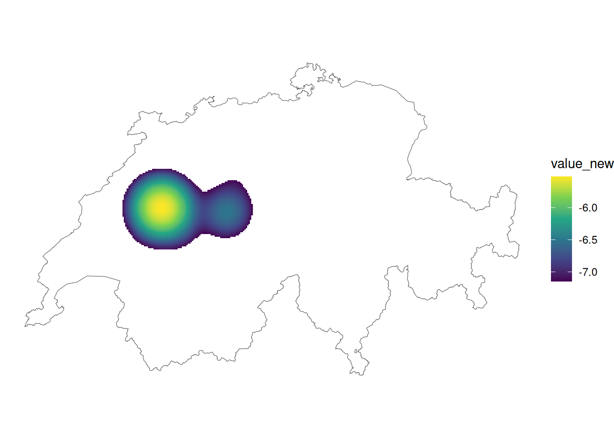

library("sf")
library("dplyr")
library("ggplot2")
library("spatstat.geom")
library("spatstat.explore")Rauman 3: Übung A
Für die heutige Übung benötigen wir folgende Datensätze. Importiere diese in R. Prüfe, ob das CRS korrekt gesetzt wurde und setze es wenn nötig. Mache dich mit den Daten vertraut (visualieren, durchscrollen usw).
- rotmilan.gpkg: Dieser Datensatz stammt aus einem grösseren Forschungsprojekt der Vogelwarte Sempach, welcher über die die Plattform movebank zur Verfügung gestellt wurde (siehe Scherler (2020)). Es handelt sich dabei um ein einzelnes Individuum, welches seit 2017 mit einem Sender versehen ist und über ganz Mitteleuropa zieht. Wir arbeiten in dieser Übung nur mit denjenigen Datenpunkten, die in der Schweiz erfasst wurden. Wer den ganzen Datensatz analysieren möchte, kann sich diesen über den Movebank-Link runterladen.
- luftqualitaet.gpkg: Dieser Datensatz beinhaltet Messungen von Stickstoffdioxid \(NO_2\) aus dem Jahr 2015 für 97 Messstellen in der Schweiz. Stickstoffdioxid entstehen beim Verbrennen von Brenn- und Treibstoffen, insbesondere bei hohen Verbrennungstemperaturen, wobei der Strassenverkehr als Hauptquelle gilt. Mehr Informationen dazu findet ihr hier.
- schweiz.gpkg: Landesgrenze der Schweiz
Als erstes wollen wir für die Datensätze luftqualitaet und rotmilan Dichteschätzungen durchführen. Lade vorgängig die dafür notwendigen Packages in deine R-Session.
Musterlösung
luftqualitaet <- read_sf("datasets/rauman/luftqualitaet.gpkg")
rotmilan <- read_sf("datasets/rauman/rotmilan.gpkg")
schweiz <- read_sf("datasets/rauman/schweiz.gpkg")Aufgabe 1: Rotmilan Bewegungsdaten visualisieren
Die erste Frage, die bei solchen Bewegungsstudien typischerweise gestellt wird, lautet: Wo hält sich das Tier hauptsächlich auf? Um diese Frage zu beantworten, kann man als erstes einfach die Datenpunkte in einer einfachen Karte visualisieren. Erstellt zur Beantwortung dieser Frage nachstehende Karte.
Musterlösung
ggplot(schweiz) +
geom_sf() +
geom_sf(data = rotmilan) +
theme_void()Aufgabe 2: Kernel Density Estimation berechnen
In einer ersten Annäherung funktioniert dies, doch wir sehen hier ein klassisches Problem des “Overplotting”. Das heisst, dass wir durch die Überlagerung vieler Punkte in den dichten Regionen nicht abschätzen können, wie viele Punkte dort effektiv liegen und ggf. übereinander liegen. Es gibt hier verschiedene Möglichkeiten, die Punktdichte klarer zu visualisieren. Eine unter Biologen sehr beliebte Methode ist die Dichteverteilung mit einer Kernel Density Estimation (KDE). Dies v.a. darum, weil mit KDE das Habitat (Streifgebiet) eines Tieres abgeschätzt werden kann. Homeranges werden oft mit KDE95 und Core Areas mit KDE50 definiert (Fleming C., Calabrese J., 2016).
Für die Berechnung der Density verwenden wir die Funktion density.ppp aus spatstat. Diese library ist etwas komplex in der Anwendung. Damit wir dieses Verfahren aber dennoch auf unsere Rotmilan-Daten anwenden können, haben wir eine eigene KDE-Funktion erstellt, die wir Euch zur Verfügung stellen.
Wir ermutigen alle, die dafür Kapazität haben, unsere Funktion eingehend zu studieren und allenfalls ganz auf die Funktion zu verzichten und stattdessen direkt spatstat zu verwenden. Wenn ihr mit unserer Funktion arbeiten möchtet, müsst ihr den unten stehenden Code in euer Skript kopieren und ausführen.
my_kde <- function(points, cellsize, bandwidth, extent = NULL){
library("spatstat.geom") # um sf in ppp zu konvertieren
library("spatstat.explore") # um die Dichte zu berechnen
points_ppp <- as.ppp(points) # konvertiert sf > ppp
if(!is.null(extent)){
# falls ein extent angegeben ist, wird dieser verwendet
# um das "Beobachtungsfenster" zu setzen
Window(points_ppp) <- as.owin(st_bbox(extent))
}
# macht eine Dichteschätzung
points_density <- density.ppp(x = points_ppp, sigma = bandwidth, eps = cellsize)
# konvertiert den Output in ein DataFrame
points_density_df <- as.data.frame(points_density)
points_density_df
}Die Parameter der Funktion sollten relativ klar sein:
points: Ein Punktdatensatz aus der Classsfcellsize: Die Zellgrösse des Output-Rastersbandwidth: Der Suchradius für die Dichteberechnungextent(optional): Der Perimeter, in dem die Dichteverteilung berechnet werden soll. Wenn kein Perimeter angegeben wird, wird die “bounding box” vonpointsgenutzt.
Wenn wir nun mit my_kde() die Dichteverteilung berechnen, erhalten wir ein data.frame mit X und Y Koordinaten sowie eine Spalte value zurück. Nutzt diese drei Spalten mit geom_raster(), um eure Daten mit ggplot zu visualisieren (aes(x = X, y = Y, fill = value).
rotmilan_kde <- my_kde(points = rotmilan, cellsize = 1000, bandwidth = 10000, extent = schweiz)
head(rotmilan_kde)
## x y value
## 1 2485909 1075767 5.632740e-24
## 2 2485909 1076766 8.290197e-23
## 3 2485909 1077764 3.032138e-23
## 4 2485909 1078763 6.522508e-23
## 5 2485909 1079761 9.599267e-23
## 6 2485909 1080760 1.183168e-22Musterlösung
ggplot() +
geom_raster(data = rotmilan_kde, aes(x, y, fill = value)) +
geom_sf(data = schweiz, fill = NA) +
scale_fill_viridis_c() +
theme_void()Die Kernel Density Estimation ist nun sehr stark von den tiefen Werten dominiert, da die Dichte in den meisten Zellen unseres Untersuchungsgebiets nahe bei Null liegt. Wie erwähnt sind Wissenschaftler häufig nur an den höchsten 95% der Werte interessiert. Folge folgenden Schritten, um das Resultat etwas besser zu veranschaulichen:
- Berechne die 95. Perzentile aller Werte mit der Funktion
quantileund bennene diesenq95 - Erstelle eine neue Spalte in
rotmilan_kde, wo alle Werte tiefer alsq95NAentsprechen - (Optional): Transformiere die Werte mit log10, um einen differenzierteren Farbverlauf zu erhalten
Wir können die tiefen Werte ausblenden, indem wir nur die höchsten 5% der Werte darstellen. Dafür berechnen wir mit raster::quantile die 95. Perzentile aller Werte und nutzen diesen Wert als “Grenzwert” für die Darstellung.
Zusätzlich hilft eine logarithmische Transformation der Werte, die Farbskala etwas sichtbarer zu machen.
Musterlösung
q95 <- quantile(rotmilan_kde$value, probs = 0.95)
rotmilan_kde <- rotmilan_kde |>
mutate(
value_new = ifelse(value > q95, value, NA),
value_new = log10(value_new)
)
ggplot() +
geom_raster(data = rotmilan_kde, aes(x, y, fill = value_new)) +
geom_sf(data = schweiz, inherit.aes = FALSE, fill = NA) +
scale_fill_viridis_c(na.value = NA) +
theme_void()
Aufgabe 3: Dichteverteilung mit Thiessen Polygonen
Thiessen Polygone bieten eine spannende Alternative, um Unterschiede in der Dichteverteilung von Punktdatensätzen zu visualisieren. Wir wollen dies nun ausprobieren und konstruieren zum Schluss die Thiessenpolygone für die Rotmilan-Daten für das Untersuchungsgebiet Schweiz. Nutze die Anleitung für das Erstellen von Thiessenpolygonen aus der Übung B, um Thiessenpolygone für die Rotmilanpositionen zu erstellen.
Musterlösung
thiessenpolygone <- rotmilan |>
st_union() |>
st_voronoi()
schweiz <- st_union(schweiz)
thiessenpolygone <- st_cast(thiessenpolygone)
thiessenpolygone_clip <- st_intersection(thiessenpolygone, schweiz)Musterlösung
ggplot() +
geom_sf(data = schweiz) +
geom_sf(data = thiessenpolygone_clip, fill = NA) +
theme_void()